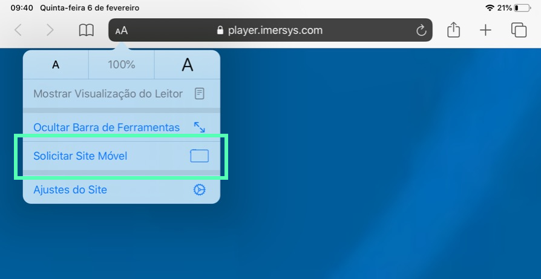

Tocando vídeos 360°
O VR Player é o tocador de vídeos na Web da Imersys. Com o VR Player você
assiste vídeos em 360 graus e conteúdo de realidade virtual usando headsets
ou dispositivos tradicionais.
Usando headset
É recomendado utilizar um headset de realidade virtual (ex. óculos de realidade virtual)
para para uma maior imersão e também maior conforto durante a visualização de vídeos longos.
Oculus Quest
| Navegador |
Versão suportada |
| Oculus Browser |
Em breve |
Oculus Go & Gear VR
| Navegador |
Versão suportada |
| Oculus Browser |
Em breve |
Usando dispositivos tradicionais
PC & laptop (Windows e Linux)
| Navegador |
Versão suportada |
| Chrome |
79+ |
| Edge |
Em breve |
Android
| Navegador |
Versão suportada |
Funciona com Cardboard |
| Firefox (recomendado) |
68+ |
Sim |
| Chrome |
79+ |
Em breve |
iPhone (iOS 13.3+)
| Navegador |
Versão suportada |
Funciona com Cardboard |
| Safari (recomendado) |
13 |
Sim |
| Chrome |
79 |
Sim |
iPad (iPad OS)
| Navegador |
Versão suportada |
| Safari |
13, com a opção de Site Móvel (ver explicação abaixo) |
No iPad, o navegador Safari utiliza por padrão a versão desktop para visualizar as páginas, o que impossibilita alguns recursos mobile interessantes do VR Player (como o acesso ao giroscópio do dispositivo, por exemplo). Portanto, o usuário deverá Solicitar Site Móvel no Safari ao clicar no botão aA da barra de URL de modo que utilize todos os recursos do VR Player:
